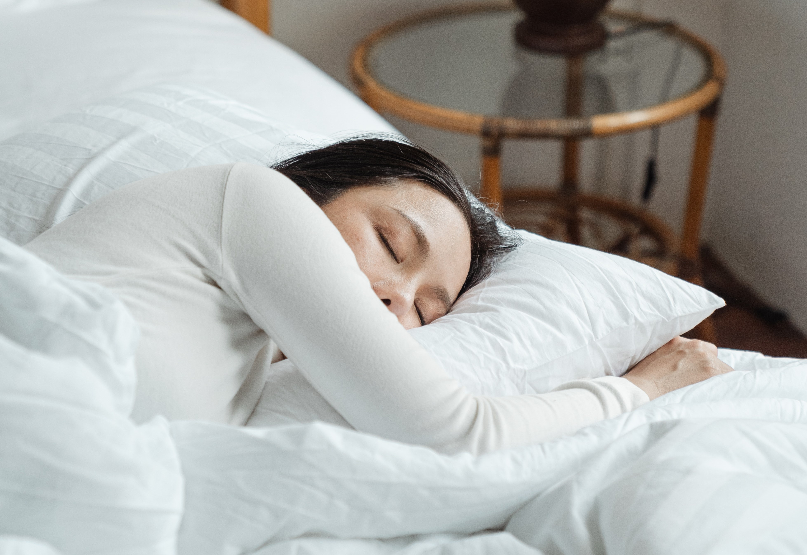

How to Reduce Risk of Chronic Disease
Reducing Risks on our health
So how can we reduce risks on our health? Take note that doing these doesn't mean that it can cure symptoms/diseases but rather helps only to mitigate so that it will not get worse.

Enjoy De-stressing
Stress is a human response when he is being pressured. Prolonged stress can give a serious health issues such as heart disease, high blood pressure, diabetes and more. So, taking a break after a tiring effort can give not only relief but also other benefits like normalizing the heartbeat, peaceful mindset, boost emotion, etc.

Put away the Salt
Excessive consumption of salt can lead to high blood pressure. It is because our body holds on to our water to dilute the salt and more water means more blood volume, so it is harder for the heart to work because you are pushing liquid through our blood vessels.

Get to Bed Earlier
Being always awake and not taking rests are bad for our health and can lead to heart stroke regardless of age, weight, or exercise habits.
Have a glass of red wine
According to studies, antioxidants found in red wine are helpful against heart disease, colon cancer, anxiety and depression. But too much alcohol is still not beneficial for us so, drink in moderation.

Posture and Ergonomics
Bad posture can make our health in greater risk because it can make our blood harder to circulate throughout our body. Especially today in this pandemic, during online classes which lasts for more than 8hrs per day and some are sitting from the start of their classes all the way to the end so be sure to always check our postures.

Do a crossword puzzle
According to studies, regularly engaging our mind to mentally challenging activities such as reading, doing crossword or other board games may have a protective effect on our brain and helps lower the risk of having Alzheimer's disease.

Weigh In
Maintaining a healthy weight can lower your risk for heart disease, stroke and some types of cancer. But for women, there’s another reason to keep pounds from piling on: It will decrease the risk for future pelvic floor disorders.

Make Dietary Substitutions
It's no secret that vegetables — especially dark, leafy greens — are good for you. But there's another benefit to packing more veggies into your daily diet: They're rich in fiber and contain lots of water, so they'll leave you full and satisfied without a lot of calories and fat.

Stairs instead Elevator
The next time you're going to a higher floor, bypass the elevator and climb the stairs instead. You'll get your blood pumping, exercise your lungs and work the muscles in your lower body.

Stretch Out
Stretching right before bed can also help you relieve tension and help you get to sleep. Regularly stretching your muscles helps you avoid injuries, stay limber and move freely as you age.